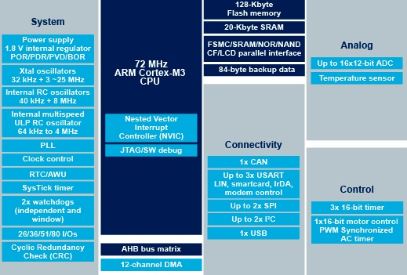

STM32F103¶
标签 : Cortex-M3 72MHz
Xin简介¶
规格参数¶
基本参数¶
发布时间：2007年6月
参考价格：
制程工艺：
供货周期：
处理性能：
封装规格：LQFP64/LQFP48/LQFP32
运行环境：-40°C to 85°C
RAM容量：20 KB
Flash容量：128 KB
特征参数¶
72 MHz Cortex-M3
2xI2C,3xUSART,2xSPI,CAN2.0B,USB2.0
芯片架构¶

功耗参数¶
供电电压：2.0 to 3.6 V
Xin选择¶
品牌对比¶
CH32F103 在某种程度上将就是为了替代 STM32F103 而存在，管脚全部兼容，寄存器全部兼容，增强了USB功能。寄存器、存储器地址映射决定了芯片外设是否兼容，能否可以使用st官方驱动库。

DMIPS |
RAM |
Flash |
UART |
SPI |
USB |
CAN |
Interface |
|
|---|---|---|---|---|---|---|---|---|
90 |
20KB |
64/128KB |
3 |
2 |
USBD |
2.0B |
9 |
|
90 |
20KB |
64KB |
3 |
2 |
H/D+D |
2.0B |
9 |
|
GD32F103 |
90 |
20KB |
64KB |
3 |
2 |
USBD |
2.0B |
9 |
APM32F103 |
90 |
20KB |
64KB |
3 |
2 |
USBD |
2.0B |
9 |
HK32F103 |
90 |
20KB |
64KB |
3 |
2 |
USBD |
2.0B |
9 |
CKS32F103 |
90 |
20KB |
64KB |
3 |
2 |
USBD |
2.0B |
9 |
系列对比¶
型号对比¶

Xin应用¶
Marlin¶
MKS Robin
Marlin 方案
CMSIS-DAP¶
CMSIS-DAP 方案